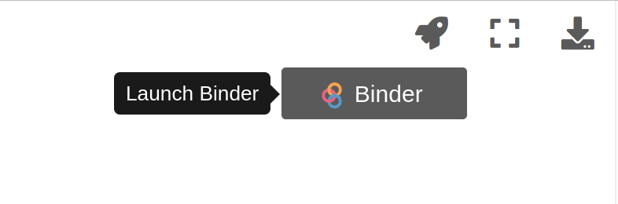

Getting started with ac3airborne#
Welcome to ac3airborne! We’re happy that you’re here and hope that you find this Python library to be useful for your needs. In order to help you to get started with ac3airborne, we’ve put together this collection of tutorials that should introduce you to the basic syntax and functionality of this library.
For installation instructions, please see our Github Repository.
This package intends to make the access to the airborne data collected within the various AC3 airborne campaigns more easy.
In some of the examples you will see an icon like the first one on this picture:
Just go with your mouse on it:

Clicking on Binder will start an virtual environment and the page will be shown as a Jupyter Notebook within a Jupyter Hub, so that you can try the examples yourself!
Functionality#
First of all we want to import the ac3airborne module:
import ac3airborne as ac3a
If you want to check which version of the package is currently installed:
ac3a.__version__
'v0.9.1-7-ge0d6269'
Basic methods#
There are two basic methods which do most of the work in this library:
get_flight_segmentsget_intake_catalog
ac3airborne.get_flight_segments#
meta = ac3a.get_flight_segments()
This method downloads and parses flight segmentation information. Let’s look into its output:
type(meta)
dict
As you can see, the method returns a dictionary. Let’s take a look to its keys:
list(meta.keys())
['ACLOUD',
'AFLUX',
'COMPEX-EC',
'HALO-AC3',
'HAMAG',
'MOSAiC-ACA',
'PAMARCMiP']
The keys correspond to the different campaigns. We select one of them and take a look to the nested structure of the dictionary.
type(meta['ACLOUD'])
dict
list(meta['ACLOUD'])
['P5', 'P6']
We have two keys, corresponding to the Polar 5 and to the Polar 6 aircraft of the Alfred-Wegener-Institute for Polar and Marine research.
type(meta['ACLOUD']['P5'])
dict
list(meta['ACLOUD']['P5'].keys())
['ACLOUD_P5_RF04',
'ACLOUD_P5_RF05',
'ACLOUD_P5_RF06',
'ACLOUD_P5_RF07',
'ACLOUD_P5_RF08',
'ACLOUD_P5_RF10',
'ACLOUD_P5_RF11',
'ACLOUD_P5_RF13',
'ACLOUD_P5_RF14',
'ACLOUD_P5_RF15',
'ACLOUD_P5_RF16',
'ACLOUD_P5_RF17',
'ACLOUD_P5_RF18',
'ACLOUD_P5_RF19',
'ACLOUD_P5_RF20',
'ACLOUD_P5_RF21',
'ACLOUD_P5_RF22',
'ACLOUD_P5_RF23',
'ACLOUD_P5_RF25']
As you can see, once we selected the campaign and the aircraft, the third level of the nested dictionary consists of the names of the research flights. We can now select a specific flight and look deeper into it:
type(meta['ACLOUD']['P5']['ACLOUD_P5_RF14'])
dict
list(meta['ACLOUD']['P5']['ACLOUD_P5_RF14'].keys())
['co-location',
'contacts',
'date',
'events',
'flight_id',
'flight_report',
'landing',
'mission',
'name',
'platform',
'remarks',
'segments',
'takeoff']
We now see that this flight contains following informations:
contactsdateeventsflight_idflight_reportlandingmissionnameplatformremarkssegmentstakeoff
contacts flight_report#
The first it’s just the contact data for reference, for example:
meta['ACLOUD']['P5']['ACLOUD_P5_RF14']['contacts']
[{'email': 'mario.mech@uni-koeln.de',
'name': 'Mario Mech',
'tags': ['pi', 'lc']}]
The second is the location of the metadata:
meta['ACLOUD']['P5']['ACLOUD_P5_RF14']['flight_report']
'https://home.uni-leipzig.de/~ehrlich/ACLOUD_wiki_doku/lib/exe/fetch.php?media=14_20170608_p5_acloud_flight_report.pdf'
date takeoff landing#
The date of the flight, the time when it took of and when it landed:
meta['ACLOUD']['P5']['ACLOUD_P5_RF14']['date']
datetime.date(2017, 6, 8)
meta['ACLOUD']['P5']['ACLOUD_P5_RF14']['takeoff']
datetime.datetime(2017, 6, 8, 7, 36, 50)
meta['ACLOUD']['P5']['ACLOUD_P5_RF14']['landing']
datetime.datetime(2017, 6, 8, 12, 51, 25)
As you can see the time is given as datetime.date or datetime.datetimeobject.
events remarks#
Some metadata:
meta['ACLOUD']['P5']['ACLOUD_P5_RF14']['events']
['Ny-Alesund overflight with cross pattern',
'Polarstern overflight with cross pattern',
'A-train underflight',
'Racetrack pattern over sea ice',
'Radiometer calibration']
meta['ACLOUD']['P5']['ACLOUD_P5_RF14']['remarks']
['Thin broken clouds over sea ice']
other keys#
meta['ACLOUD']['P5']['ACLOUD_P5_RF14']['mission']
'ACLOUD'
meta['ACLOUD']['P5']['ACLOUD_P5_RF14']['platform']
'P5'
meta['ACLOUD']['P5']['ACLOUD_P5_RF14']['name']
'RF14'
meta['ACLOUD']['P5']['ACLOUD_P5_RF14']['flight_id']
'ACLOUD_P5_RF14'
The flight segments#
This is the key, which actually contains the segmented flight. Let’s take a closer look:
type(meta['ACLOUD']['P5']['ACLOUD_P5_RF14']['segments'])
list
As you can see the segments-key does not contain a dictionary, as the previous levels. Instead it contains a list! Let’s take the first element:
type(meta['ACLOUD']['P5']['ACLOUD_P5_RF14']['segments'][0])
dict
So the segment-key contains actually a list of dictionary as value. Let’s just print this first segment:
meta['ACLOUD']['P5']['ACLOUD_P5_RF14']['segments'][0]
{'dropsondes': [],
'end': datetime.datetime(2017, 6, 8, 8, 8, 53),
'irregularities': ['whale-watching loop'],
'kinds': ['major_ascent', 'nya_overflight', 'sveabreen_glacier_overflight'],
'levels': [100, 9700],
'name': 'major ascent',
'segment_id': 'ACLOUD_P5_RF14_ma',
'start': datetime.datetime(2017, 6, 8, 7, 36, 50)}
and it’s keys:
list(meta['ACLOUD']['P5']['ACLOUD_P5_RF14']['segments'][0].keys())
['dropsondes',
'end',
'irregularities',
'kinds',
'levels',
'name',
'segment_id',
'start']
As you can see a flight segment usually contains:
startandendtimelevelsheight(s) of the flightnameandsegment_idto identify itkindsor to which type of segments it belongs (high_level,low_leveland so on)irregularitiessome comments about irregulariesdropsondes
Take a look at Querying the flight phase files for a more advanced selection of the segments.
ac3airborne.get_intake_catalog#
cat = ac3a.get_intake_catalog()
Open the intake data catalog. The catalog provides access to public AC3 airborne datasets without the need to manually specify URLs to the individual datasets. Let’s take a look into it:
type(cat)
intake.catalog.local.YAMLFileCatalog
As you can see, this is not a dictionary, but it has keys that can be selected as a dictionary. We can list them using .walk(depth=1) instead of keys():
list(cat.walk(depth=1))
['ACLOUD',
'PAMARCMiP',
'AFLUX',
'MOSAiC-ACA',
'HALO-AC3',
'HAMAG',
'COMPEX-EC',
'COMPEX']
Let’s take again the polar 5 during ACLOUD:
list(cat['ACLOUD']['P5'].walk(depth=1))
['GPS_INS',
'AMSR2_SIC',
'CLOUD_TOP_HEIGHT',
'MiRAC-A',
'MiRAC-A_LWP',
'MiRAC-P',
'DROPSONDES',
'FISH_EYE_CAMERA',
'BROADBAND_IRRADIANCE',
'NOSE_BOOM',
'NOSE_BOOM_TURB',
'SMART',
'HAWK',
'EAGLE',
'ESA_CCI_SST',
'AMALi',
'AMALi_CM',
'AMALi_CTH']
These are the data set which are available for the polar 5. Let’s take GPS_INS:
list(cat['ACLOUD']['P5']['GPS_INS'].walk(depth=1))
['ACLOUD_P5_RF04',
'ACLOUD_P5_RF05',
'ACLOUD_P5_RF06',
'ACLOUD_P5_RF07',
'ACLOUD_P5_RF08',
'ACLOUD_P5_RF10',
'ACLOUD_P5_RF11',
'ACLOUD_P5_RF13',
'ACLOUD_P5_RF14',
'ACLOUD_P5_RF15',
'ACLOUD_P5_RF16',
'ACLOUD_P5_RF17',
'ACLOUD_P5_RF18',
'ACLOUD_P5_RF19',
'ACLOUD_P5_RF20',
'ACLOUD_P5_RF21',
'ACLOUD_P5_RF22',
'ACLOUD_P5_RF23',
'ACLOUD_P5_RF25']
These are the flights that are available for the given dataset. Let’s take again ACLOUD_P5_RF14:
type(cat['ACLOUD']['P5']['GPS_INS']['ACLOUD_P5_RF14'])
intake_xarray.netcdf.NetCDFSource
cat['ACLOUD']['P5']['GPS_INS']['ACLOUD_P5_RF14']
ACLOUD_P5_RF14:
args:
urlpath: simplecache::https://atmos.meteo.uni-koeln.de/ac3/acloud/p5/gps_ins/ACLOUD_P5_GPS_INS_20170608_RF14.nc
description: ''
driver: intake_xarray.netcdf.NetCDFSource
metadata:
catalog_dir: /net/sever/mech/data/ac3airborne/ac3airborne-intake/ACLOUD/P5/
In order to read the data set, use the method .to_dask() (or sometimes .read()) as explained in the examples under datasets
Constants#
ac3airborne comes with some predefined constants, such the coordinates of Ny-Ålesund and Longyearbyen give as dictionaries:
import ac3airborne.constants as ac3c
ac3c.NYA
{'name': 'Ny-Ålesund', 'lon': 11.922222, 'lat': 78.925}
ac3c.LYB
{'name': 'Longyearbyen', 'lon': 15.633333, 'lat': 78.216667}
ac3c.LYR
{'name': 'Svalbard Airport, Longyear',
'icao': 'ENSB',
'iata': 'LYR',
'lon': 15.465556,
'lat': 78.246111,
'elev_m': 28,
'elev_ft': 94}
ac3c.LYR['lon']
15.465556